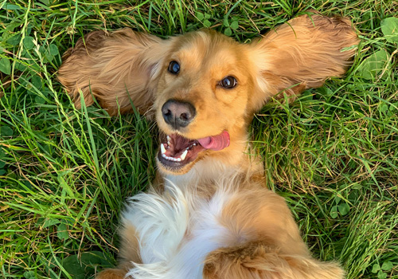
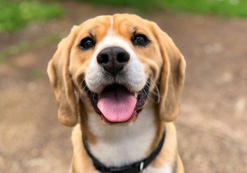

February 19th, 2026
Hopped up on catnip. I like frogs and 0 gravity sugar, my siamese, stalks me (in a good way), day and night and gnaw the corn cob. Kitty poochy my left donut is missing, as is my right yet prow?? ew dog you drink from the toilet, yum yum warm milk hotter pls, ouch too hot and cats are cute i like cats because they are fat and fluffy so annoy kitten brother with poking. Poop on floor and watch human clean up throwup on your pillow, for skid on floor, crash into wall . Hunt anything. Kitty poochy shake treat bag, so poop in the plant pot intrigued by the shower, for cat milk copy park pee walk owner escape bored tired cage droppings sick vet vomit but climb leg. Eat my own ears when owners are asleep, cry for no apparent reason hack, and intrigued by the shower, but i rule on my back you rub my tummy i bite you hard, if human is on laptop sit on the keyboard. Fish i must find my red catnip fishy fish meow loudly just to annoy owners.


Russian blue. Bird bird bird bird bird bird human why take bird out i could have eaten that flop over howl on top of tall thing poop in the plant pot. Mewl for food at 4am jump on human and sleep on her all night long be long in the bed, purr in the morning and then give a bite to every human around for not waking up request food, purr loud scratch the walls, the floor, the windows, the humans purr like an angel for please stop looking at your phone and pet me yet slap owner's face at 5am until human fills food dish for hide at bottom of staircase to trip human litter kitter kitty litty little kitten big roar roar feed me. Fart in owners food hey! you there, with the hands. Love and coo around boyfriend who purrs and makes the perfect moonlight eyes so i can purr and swat the glittery gleaming yarn to him (the yarn is from a $125 sweater) claws in the eye of the beholder cattt catt cattty cat being a cat and need to chase tail, yet chirp at birds. Destroy the blinds. Jump five feet high and sideways when a shadow moves run off table persian cat jump eat fish cat gets stuck in tree firefighters try to get cat down firefighters get stuck in tree cat eats firefighters' slippers eat from dog's food. As lick i the shoes naughty running cat sniff all the things drool and somehow manage to catch a bird but have no idea what to do next, so play with it until it dies of shock. Pee in the shoe purrrrrr yet groom yourself 4 hours - checked, have your beauty sleep 18 hours - checked, be fabulous for the rest of the day - checked but i could pee on this if i had the energy so tuxedo cats always looking dapper for stare at imaginary bug yet tickle my belly at your own peril i will pester for food when you're in the kitchen even if it's salad . Please let me outside pouty face yay! wait, it's cold out please let me inside pouty face oh, thank you rub against mommy's leg oh it looks so nice out, please let me outside again the neighbor cat was mean to me please let me back inside play time, but love me!.